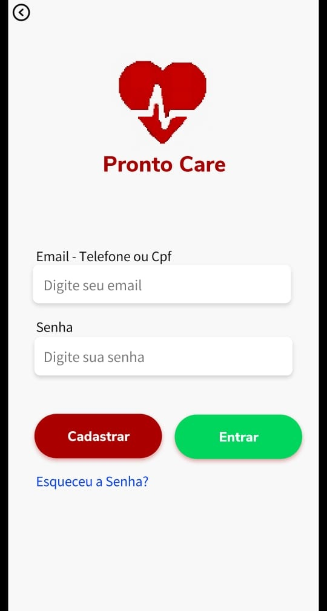

Tenha o controle da sua saúde na palma da mão com Pronto Care.
Pronto Care e as ODS (Objetivos de Desenvolvimento Sustentável)
Pronto Care – aposta na inovação tecnológica como solução capaz de
proporcionar o Bem Estar, a universalização dos serviços de saúde,
com mais qualidade e assistência mais inclusiva nos serviços de saúde.
Sobre
Com a sociedade cada vez mais conectada, a dificuldade do paciente no
atendimento da saúde pública e advento do Covid19. Pronto Care nasce
com o propósito de solucionar as dificuldades do paciente da rede
pública de saúde.
Trazer soluções inovadoras capaz de solucionar filas e aglomerações -
com o Totem Digital - nos hospitais na fase primária ou de triagem,
otimizar o fluxo e atendimento dos profissionais da saúde, bem como
acompanhamento do histórico do paciente com o Prontuário Eletrônico
Único do Paciente – PEUP.
Para o paciente, solicitação, agendamento, exames, e a facilidade do
Totem Digital - integrado e na palma da mão - a solução ideal para
facilitar a vida do paciente do Sistema Único de Saúde – SUS.
Nossos parceiros comerciais
Hospitais Privados e Clínicas especializadas e demais particulares, entrem em contato e saibam mais.
pcare.atendimento@prontocare.com.br (em breve), e siga nossas redes sociais e fique por dentro! Insta: @pronto.care
Funcionalidades
Com objetivo de facilitar a triagem, Pronto Care oferece Totem Digital - o paciente faz sua medição de temperatura e aferição do batimento cardíaco, senhas inteligentes e oferecimento de álcool gel para proteção individual.
Cadastro do profissional da saúde e do paciente de forma personalizada e informações gerais do paciente.
Segurança da informação com dupla camada de segurança.
Integração dos sistemas da saúde.
Histórico do paciente com sistema integrado da saúde para acompanhamento em tempo real, SUS e outros.
Agendamento de marcação de consulta.
Alimentação na base de dados dos prontuários eletrônico pelos profissionais da saúde, em formato digital, de forma integrada.
Recebimento e consulta de exame médico em meio digital.

Benefícios
Aplicativo gratuito para o paciente do SUS
Atendimento humanizado desde a fase primária e/ou triagem(anamnese)
Redução de filas no atendimento nos Hospitais com Totem Digital
Automação da do prontuário do paciente
Integração entre os sistemas de saúde num único aplicativo
Acompanhamento personalizado do seu médico através de Aplicativo Web
Solicitação de agendamento de consulta médica com hora marcada
Resultado de exame em meio digital
Perfil Médico/Paciente personalizado
Melhora na tomada de decisão dos profissionais da saúde Redução de custos com atendimento no Sistema de Saúde Único – SUS
Sim. Pode baixar, porém, recomendamos levar essa inovação para
Secretaria da Saúde da sua cidade entrar em contato conosco para
ter total uso do aplicativo. Vamos juntos transformar o sistema
de saúde da sua cidade.
É simples! Apenas baixar diretamente aqui no site o aplicativo Pronto Care
através da loja App Store ou Google Play – Cadastrar-se e acessar o
aplicativo e ser um paciente com perfil personalizadas para acompanhado
do seu médico.
.jpg)